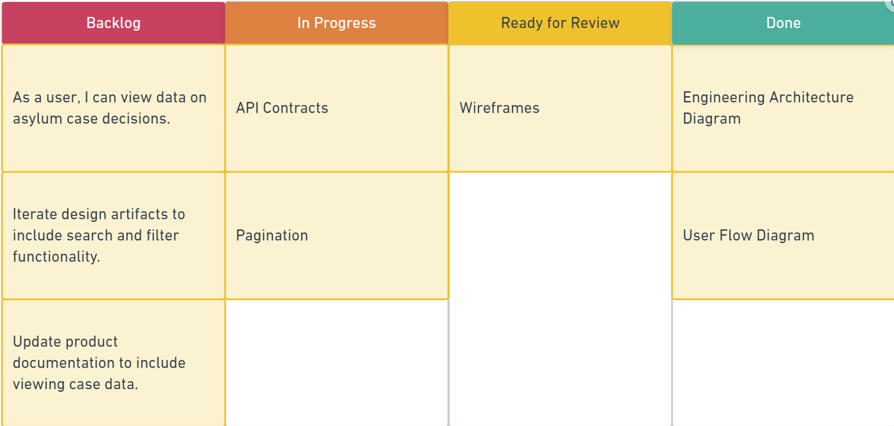

Module 1: Onboarding & Planning
Beginning Labs
Welcome to BloomTech Labs! This module will help you understand the structure of Labs, what to expect, and how to get started with your project.
How Do I Pass Labs?
Required Assessments
For Module 1: Onboarding, you need to score 100% on:
- Check for Understanding: Labs Kickoff
- Check for Understanding: Local Setup
- Check for Understanding: Basic Planning
For Module 2-4: Build Sprints, you need to pass based on the attached rubric:
- Submit Your Deliverables: Loom and Code
For Module 5: Final Steps, you will need to pass:
- Submit your Career Artifacts
- Payment Type Quiz Completed
Grading Criteria
To pass BloomTech Labs, you are required to pass Modules 2 through 4, which focus on different project-based coding challenges and prepare you for technical interviews. The success of your work in the modules will be evaluated based on a rubric, which consists of the following criteria:
- Presenting Your Work - the student must clearly and accurately explain all aspects of their work, including their approach, design decisions, and results.
- Organization - the video must be well-organized, easy to follow, and present information in a logical and coherent manner.
- Technical Knowledge - the student must demonstrate a solid understanding of the technical concepts and tools used in their work. They should be able to answer technical questions.
- Code Quality - the code must be well-organized, readable, and follow the best practices learned.
- Functionality - the code must run without errors and produce the expected results, meeting the requirements of the assignment.
- Commenting - comments must be clear and provide enough information to understand the purpose and function of the code.
- Correctness - the code must be implemented in a correct, efficient, and optimal way.
- Test Execution - the student must be able to execute tests, document issues or bugs found, and explain how the tests are verifying the functionality of the system.
- Communication & Delivery - the student must communicate effectively and professionally, speaking clearly, using appropriate nonverbal communication, and expressing themselves in a confident and engaging manner. They should also show active listening skills and be able to build rapport.
- Preparation & Self-Presentation - the student must present themselves in a professional and polished manner, be well-prepared, and project confidence and enthusiasm.
- Adaptability - the student must demonstrate an ability to adapt to new information and respond appropriately to unexpected questions or changes in the interview, displaying flexibility and initiative.
To pass Labs, you must meet the expectations listed in the rubric in each of these criteria.
Continue on to the next page to learn about how Labs works.
How Labs Works
The goal of Labs is to help you:
- Apply and integrate skills taught in core on a complex project.
- Articulate code contributions confidently in a technical interview.
To achieve this, we will:
- Present you with a project template. This template will give you starter code for you to build off of. You will fork this GitHub template, locally setup the repo on your computer, and begin work on tickets we've made for you.
- Give you tickets to add components/features to the existing project. Similar to what a junior dev might do, you will add working code to the complex project and deliver the requirements of each ticket.
- Have you submit your code alongside a Loom video explaining what you did and why you did it. Each build sprint will require the submission of 2 deliverables: loom video link and GitHub code link. The code is meant to test your technical ability, and the loom video is meant to simulate a technical interview.
- Grade your deliverables based on the rubric attached to each sprint submission. The rubric will measure if you are ready for your first dev job based on your ability to code and how well you articulate what you did.
- Check your resume for your Labs' contributions. We want to make sure that you added the complex project you worked on to your resume to showcase your ability as an developer.
To give this plan structure, we have divided these goals into 5 modules:
| Module | Goal |
|---|---|
| Onboarding | Understand how Labs works, get locally setup, & learn agile |
| Build Sprint 1 | Ship your first ticket & record loom articulating what you did |
| Build Sprint 2 | Ship your second ticket & record loom articulating what you did |
| Build Sprint 3 | Ship your third ticket & record loom articulating what you did |
| Final Steps | Finalize your resume and complete your payment quiz |
Basic Overview of Development in Labs
Basic Overview of Development in Labs
Labs Tech Stack
Before diving into the Labs environment, it's important to understand the technology stack that powers it. In software development, a technology stack refers to the combination of tools, frameworks, and languages used to build a product.
The following is a list of the key components in the Labs Tech Stack:
- Frontend: React - JavaScript library for building user interfaces
- Backend: SpringBoot + Java - easy to create stand-alone, production-grade Spring based Applications that you can "just run"
- Database: PostgreSQL - an open-source relational database management system
By being familiar with these technologies, you'll be better equipped to complete Labs modules and build your coding skills.
Labs Best Practices & Tips for Success
Ok—now you know how Labs works and the goal of Labs. But what does success in Labs look like—and how do you achieve it?
Communication
Get ready to hear this over and over from here on out: communication is the key to producing great software. If your mind goes blank in an interview and there's only one word you can remember, make sure it's "communication."
Communication comes in many forms:
- You'll need to communicate with your Product Manager about the scope, objectives, and priorities of your product.
- You'll need to communicate with your Engineering and Data Science Managers for guidance on implementation and to resolve issues (after first troubleshooting with your team!).
- You'll need to communicate with future developers on your product by including solid documentation.
- You'll need to communicate with future employers so they grasp your ability and experience.
Do all of these throughout Labs and beyond, and you will succeed in Labs and at your first job.
Professionalism
In virtually every way, Labs is designed both to equip you to land a job and to prepare you for the job itself. (What use would it be to be able to get a job, but not keep it?)
Professionalism factors into both of these critical goals. Ask yourself: what does professionalism mean to you?
Many factors contribute to professionalism in the job search and in the workplace, but here are some of the big things to focus on in Labs to prepare you:
- Show up: Be here, whether live or by submitting regular updates and communicating frequently with your team. Treat Labs like a job. Don't leave your teammates hanging.
- Cameras on: Have you ever spoken to a Zoom room full of faceless squares? Your instructors have 😞 But you know what? We can take it! A hiring manager, on the other hand... In Labs, you'll need to keep your camera on to practice the level of interaction a hiring manager will expect.
- Participate: Speak up during meetings, ask and respond to questions, commit code every day, and engage critically with your project and the curriculum. This will help by getting you in the habit of doing the same kinds of things on the job.
The 3 Ps
The 3 Ps (Prepared, Positive, Progress) and Professionalism are key to success in Labs. By being prepared and positive, you can communicate your progress effectively and professionally. Make sure to focus on these key elements to ensure that your meetings are productive and successful.
- Be Prepared
- Be Positive
- Communicate Progress
As with everything in Labs, be sure to focus on professionalism in meetings as well—have your camera on, don't interrupt—but most importantly, participate. (Hm—maybe there should be four Ps... 🧐)
Failure
Embrace Failure for Growth
In Labs, you will face challenges and obstacles. This is a normal part of the learning process, and it's essential for your growth as a professional. In fact, failure is an opportunity to learn, expand your skills, and level up.
Remember, failure is not a setback. It's a chance to gain experience, practice, and develop new strategies. Throughout your career, you will face failures repeatedly, and this is a good thing. The more you fail, the more you grow.
So, be open to failure, embrace it, and use it to your advantage. Work with others to overcome obstacles and learn from each other. Utilize all available resources, including failure, to become a better and more skilled professional.
We're thrilled to have you with us in Labs, and we look forward to working, failing, and learning together with you 🙂
Getting Support
In Labs, you'll have a fleet of staff, instructors, learner assistants, and career reviewers to support you. Here's how to get help.
The 20-Minute Rule
For technical problems, follow the 20-minute rule:
- First, try to solve the problem on your own for 20 minutes.
- If still unsolved, loop in a teammate for 20 minutes.
- If still unsolved, loop in your team's Learning Assistant for 20 minutes.
- If still unsolved, post in the Labs Slack channel.
- If still unsolved, post in the Hub Knowledge Base for support from your community of peers and instructors!
- If still unsolved, open a support ticket in the Hub for help from a Learning Assistant.
Note: Please do not send Slack DMs to your instructors! Instead, you can always use the Knowledge Base or open a support ticket in the Hub. This helps make sure you get the quickest support possible!
Nontechnical Issues
For nontechnical concerns (like an issue with a teammate), open a support ticket in The Hub. This helps make sure your concern is routed to the right place. (If it's an emergency, that's the once case in which you should escalate it to a Labs staff member immediately!)
Project Setup
Access the starter repo for the projectLearn how to set up your local development environment and get familiar with the project structure.
Local Setup
Access the Project Design Document
Project Design DocumentThe Bloom Coder Assignment App is designed to help manage and review assignments for code camp learners. The design document outlines:
- User stories for both learners and reviewers
- Technical stack including React, Spring Boot, and PostgreSQL
- Domain objects and database schema
- RESTful API endpoints
- Wireframes for key user interfaces
This document serves as the foundation for understanding the project requirements and architecture. Make sure to review it thoroughly before starting your implementation.
User Stories
What are User Stories?
A user story is the smallest unit of work in an agile framework. It's an end goal expressed from the user's perspective.
The user story is an informal, general explanation of a software feature written from the perspective of the end-user or stakeholder. Note that it's not a feature itself!
The purpose of a user story is to articulate how a piece of work will deliver a particular value back to the stakeholder. Note that "stakeholders" don't have to be external end-users in the traditional sense. They can also be internal stakeholders or colleagues within your organization who depend on your team. A stakeholder is anyone who has a stake in the development of a product.
User stories are a sentence or two in simple language that outline the desired outcome. They don't go into detail. Requirements are added later, once agreed upon by the team.
User Story Formats
As a (who wants to accomplish something)
I want to (what they want to accomplish)
So that (why/rationale on what the user wants to accomplish)
Example: As a user, I want to log in using a username and password so that the system can authenticate my login.
User Stories and Agile Development
Stories fit neatly into agile frameworks like Scrum and Kanban. Agile is a development methodology that focuses on responsiveness to change—keeping the development process lean and focusing on keeping everybody aligned. You keep development cycles short, so you can get a minimum viable product (MVP) up and running quickly, and then iterate (repeat) during the next cycle based on what you learn from it. In Labs, we'll use an agile workflow that you'll be able to translate into a wide variety of work environments in the industry.
In Agile, user stories are added to sprints and "burned down" throughout the sprint. Kanban teams pull user stories into their backlog and run them through their workflow. Jira Software features a form of Kanban to help your team manage their user stories and tasks. Thanks to stories, Kanban teams learn how to manage work-in-progress (WIP) and refine their workflows.
Project Planning
Learn about project planning techniques specific to Labs and how to structure your work.
Kanban
Kanban is a methodology that comes from Japanese manufacturing practices developed in the mid-20th century. Factories would use written cards handed from person to person to communicate the status of operations. These cards were a "lean" way to manage the creation of products that was highly responsive to the realities on the ground.
In the same way as efficiently manufacturing cars, agile software development requires responsiveness to changing realities. Microsoft began developing an approach (that was soon iterated by many) to track progress on a "Kanban board"—a set of columns containing cards representing bits of work. The development team would move the cards along the board to different columns to represent their status.
Kanban board with Backlog, In Progress, Ready for Review, and Done columns.
Accordingly, Kanban comes from the Japanese language meaning "Visual Board" used in JIT ("just in time") development. Kanban is growing and it continues to evolve over time.
Kanban opens the door for communication to the entire team. The biggest advantages to using Kanban are:
- Enable evolutionary change
- Implement and scale in an agile way
- Establish culture and best practices
In order for Kanban to be successful, the organization and team have to be educated on how Kanban works. While the process seems simple, Kanban needs consistent grooming. It's a powerful tool, but it is only as good as the team that uses it. It's important to discuss the board and move tasks as they progress over time!
Kanban Concepts
- A card represents a unit of work
- Work will flow in single units or small batches
- Limit work in progress (WIP)
- Monitor the cards that go into the in-progress lane
- The number of Kanban cards equates to project work known as units
- The project manager (PM) uses this to determine capacity for the team
- Each card gives the PM a view of who is assigned
- Only in-progress items should be in the in-progress column
- New work can only start when space is available
Kanban Goals
The team needs to agree on a set of goals as the cards are set. The cards should consist of the feature or products the stakeholder wants.
As a team, each feature needs to be broken down into a user story—this will help the team understand the goal the customer wants to achieve.
Identifying the user stories (and stakeholder's goals):
- Provides transparency
- Enables higher quality
- Simplifies priority sorting
Breaking down user stories into tasks and then assigning those tasks (task management):
- Eliminates confusion
- Sets a clear path to completion
- Provides clarity on who is working on what
- Gives visibility to the team's "velocity" (work completed over time)
Tasks
A task is a granular unit of work that needs to get done to ship a user story.
In the industry, Technical Project Managers are responsible for prioritizing the backlog and capturing requirements from the business and the users for that sprint—but the developers are really the ones best positioned to understand what in terms of technical capabilities must be developed, as well as the level of effort that will entail.
Tips for Tasks
There are a few important things to consider when breaking down user stories into tasks:
- Keep tasks small, but not too small. As a rule of thumb, a task should be something that can be done within a single day, but not in a few minutes' time either.
- Keep tasks very precise in scope. Don't create tasks with such vague statements as "Coding" or "Implementation" thinking that anyone can just refer to the parent user story for details. Write something more meaningful that also makes the scope very clear. For example: "Develop the login class."
- Use the user story's acceptance criteria as a starting point, and its definition of done as a checklist. The acceptance criteria will help you determine what features need to be implemented, and the definition of done is a checklist for all user stories that can also help you determine if you're missing any tasks for the story to be done.
User Experience Planning
User Flows, Wireframes, and Styles
User Flows and Wireframes
Designers frequently use lean artifacts like user flows and wireframes to think about and communicate how users will interact with an application.
User Flows
A user flow is a diagram that shows how a user moves through an application to achieve a goal.
Wireframes
A wireframe is a basic blueprint of the layout, hierarchy, and components of a single screen or view.
Styles
Styles are anything that affects the feel or personality of an application. Styles can generally be boiled down to shape, color, and type.
Throughout your time in Labs, you'll have many opportunities to practice these design skills.
Pull Request Process
Learn how to create effective pull requests, review code, and collaborate with your team.